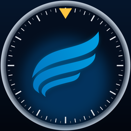

Flight Class
IFR Simulator
Política de privacidade
Última atualização: 19 de novembro de 2026
Quem somos
O Flight Class IFR Simulator é um aplicativo de treino de voo por instrumentos da Flight Class LTDA (www.flightclass.com.br), responsável pelos dados descritos aqui. Contato sobre privacidade: contato@flightclass.com.br.
Quais dados o app coleta
Quem usa o app na versão grátis ou com a assinatura da loja não tem nenhum dado pessoal coletado nem enviado para nós ou para terceiros. Não é preciso criar conta nem informar e-mail.
O único caso em que guardamos dados pessoais é o acesso de aluno Flight Class, explicado abaixo, e só para quem escolhe usá-lo.
O app guarda algumas informações somente no seu aparelho, para funcionar do jeito que você deixou:
- preferências (painel escolhido, vento, turbulência, sons, volume, cores da caneta);
- desenhos e marcações que você faz nas cartas;
- cartas em PDF ou foto que você mesmo carrega no app (lista "Minhas cartas").
Essas informações não saem do aparelho. Você pode apagar cada carta em Carta › Minhas cartas, ou tudo de uma vez limpando os dados do app nas configurações do celular ou desinstalando o app.
Acesso de aluno Flight Class (a partir da versão 1.1)
A Flight Class pode liberar o IFR Simulator Pro para os seus alunos. Esse acesso é opcional: só funciona para quem a escola cadastrou, e o app só se conecta ao nosso servidor quando você mesmo toca em "Tenho acesso Flight Class" e entra com o seu e-mail.
Nesse caso, guardamos no servidor da Flight Class:
- seu nome e seu e-mail, cadastrados pela escola;
- o prazo do seu acesso e uma anotação interna da escola (por exemplo, a sua turma);
- os aparelhos em que você entrou (no máximo 3): um código aleatório criado pelo app, o tipo do aparelho (iPhone, iPad ou Android) e as datas do primeiro e do último uso.
Para que usamos: só para conferir se o seu acesso está valendo e para limitar o uso a 3 aparelhos, evitando que a conta seja compartilhada. Não usamos esses dados para propaganda, não vendemos e não juntamos com outros dados.
Uso em aparelhos: cada acesso pode ser cadastrado em até 3 aparelhos, mas fica conectado em um aparelho por vez: ao entrar em um aparelho, os outros são desconectados (eles continuam cadastrados e podem entrar de novo com um novo código). Sair da conta não libera a vaga do aparelho. Para trocar um aparelho cadastrado por outro, fale com a Flight Class.
Para entrar, você recebe por e-mail um código de 6 números que vale 10 minutos. Guardamos só uma versão embaralhada dele, que não permite ler o código, e ela é apagada depois. Com o acesso ativo, o app consulta o servidor quando você abre ou volta para ele e há internet, para saber se o acesso continua valendo.
Empresas que trabalham para nós: o servidor e o banco de dados ficam na Cloudflare, e o e-mail com o código é enviado pela Brevo. Elas só tratam esses dados para prestar esse serviço à Flight Class e podem guardá-los fora do Brasil (por exemplo, nos Estados Unidos e na Europa). Como acontece com qualquer site, o servidor recebe o endereço IP do aparelho durante a conexão; a Flight Class não guarda o IP no banco de dados, e os registros técnicos da Cloudflare são apagados automaticamente em poucos dias.
Por quanto tempo: os dados ficam guardados enquanto você tiver cadastro de aluno no app. Você pode apagar tudo a qualquer momento no próprio app, em Ajustes › IFR Simulator Pro › Apagar minha conta (apaga na hora o seu cadastro e os seus aparelhos), ou pedindo por e-mail. "Sair desta conta" só tira o acesso deste aparelho.
Internet e permissões
O app funciona sem internet: as cartas e os dados de navegação vão dentro dele. A única exceção é o acesso de aluno Flight Class: para entrar é preciso internet, e depois o acesso continua valendo sem internet por até 30 dias. O app não pede acesso a localização, microfone ou contatos. A câmera e as fotos só são usadas quando você mesmo escolhe fotografar uma carta ou abrir a imagem de uma carta em "Carregar carta" (o celular pede sua permissão nessa hora); a foto fica só no seu aparelho.
Assinatura (IFR Simulator Pro)
A assinatura é comprada e cobrada pela App Store ou pelo Google Play. O app não recebe nem guarda dados do seu cartão; ele só consulta, no próprio aparelho, se a sua conta da loja tem a assinatura ativa. Cancelamento e reembolso são feitos na sua conta da loja.
Anúncios, rastreamento e estatísticas
Na versão grátis aparece um aviso da própria Flight Class na tela de resultado. Ele é só um link: o app não usa redes de anúncios, não usa ferramentas de rastreamento e não coleta estatísticas de uso.
Crianças
O app não é direcionado a menores de 13 anos. Só a escola cadastra alunos no acesso Flight Class.
Seus direitos (LGPD)
Se você não usa o acesso de aluno, não há dados seus conosco. Se usa, você pode pedir para ver, corrigir ou apagar os seus dados, ou tirar dúvidas, pelo e-mail contato@flightclass.com.br. Para apagar tudo na hora, use "Apagar minha conta" no app.
Aviso de segurança
O Flight Class IFR Simulator é um simulador de treino. As cartas são do DECEA e servem só para treino. Não use o app para navegação real.
Mudanças nesta política
Se o app passar a coletar algum outro dado, esta política será atualizada antes, e a data acima mudará.
Suporte
Dúvida, problema no app ou sugestão? Escreva para contato@flightclass.com.br contando o modelo do celular e o que aconteceu.
Assinatura
Para cancelar, use as assinaturas da sua conta Apple (Ajustes › seu nome › Assinaturas) ou do Google Play (Play Store › Pagamentos e assinaturas). Trocou de celular? No app, toque em Ajustes › IFR Simulator Pro › Restaurar compra.
Aluno da Flight Class
Peça seu código Pro na escola e use em Ajustes › IFR Simulator Pro › Tenho um código.